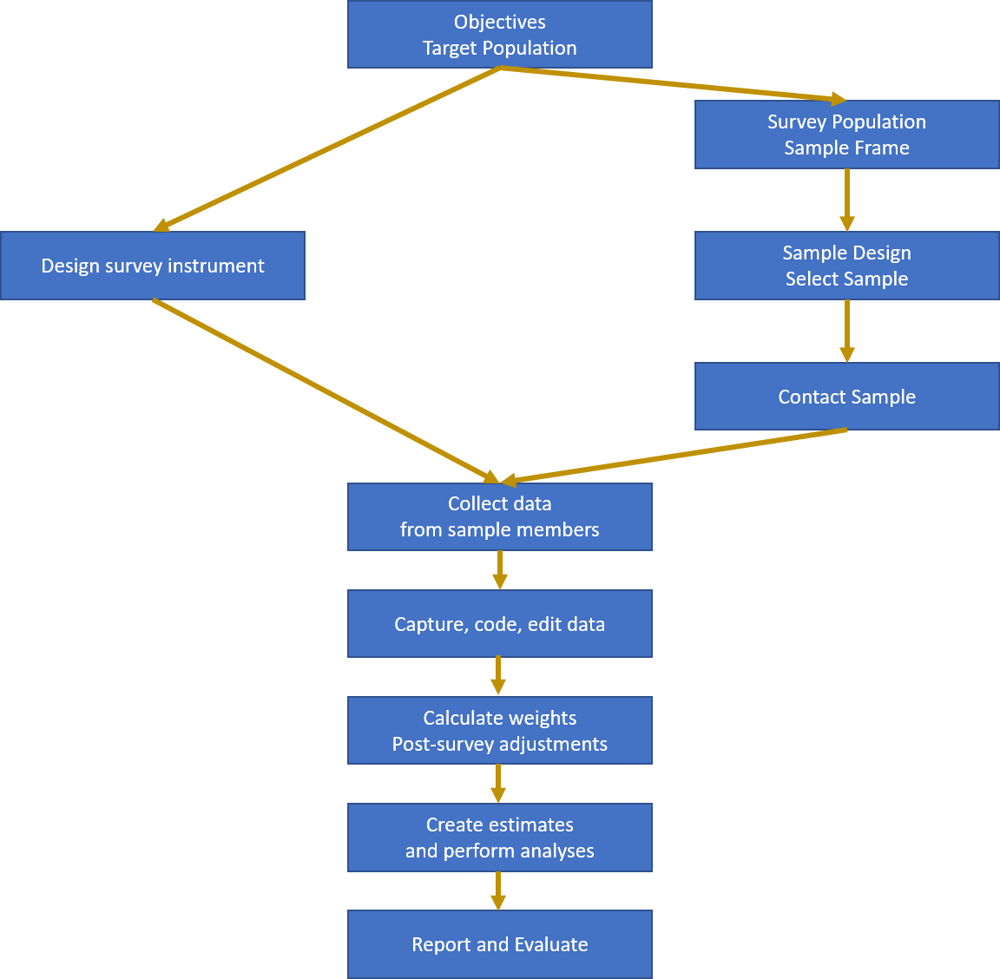

3 Sample Surveys
A sample survey is an exercise in which data are collected from a sample (a subset) or a population. The data collected are used to create estimates of the characteristics or parameters of the population.
Some examples:
- A sample of voters are telephoned to ask their voting intentions, with the aim of predicting the outcome of the election;
- A sample of sites in a river catchment is tested for the presence of algae to determine the spread of the algae throughout the entire catchment;
- A sample of households is selected, and the residents asked about their employment status, in order to estimate the national unemployment rate.
A census is a special case of a sample survey in which every member of the population is surveyed.
3.1 The Survey Process
The different steps in the survey process are shown in Figure 3.1.

Figure 3.1: The Survey Process
- Every survey has a set of objectives – the particular populations which are of interest;
- These parameters are properties of the target population: the population about which estimates are to be made;
- Not all members of the target population are able to be identified: the ones that can be surveyed make up the survey population;
- The sample frame is a listing of all members of the survey population;
- The sample design is the method of selecting the sample from the frame. The sample size is usually decided as a compromise between the required accuracy of estimates and the survey costs and other constraints (e.g. the time available for the survey);
- survey instrument is the means of data collection. It is usually a paper or electronic questionnaire, completed by the respondent or the interviewer/observer. The instrument aims to measure the properties of the sample members which mean that the desired population characteristic can be estimated. The instrument must be valid (it must actually measure what it intends to measure) and reliable (repeated measurements of the same sample member under identical circumstances should always yield similar results);
- The sample members are contacted and recruited into the sample. Not all selected members will be able to be contacted (even after strenuous efforts), and some will not respond even if contacted;
- The data are collected from the sample members in some mode (e.g. face-to-face, telephone, web, observational, …);
- The data collected are captured (stored on a computer); coded (converted into standard classification systems); edited (checks for data consistency); and stored in a final dataset;
- The data may be adjusted, e.g. imputation or weight adjustments for nonresponse may be done;
- Estimates of the parameters of interest are constructed, and other analysis of the data is carried out (e.g. regression estimation, comparison with other data etc.);
- The results are summarised in a report;
- The original data may be archived in some appropriate form, or destroyed;
- A post-survey evaluation may be made to determine how well the survey met its goals.
For example: The Household Labour Force Survey (HLFS).
- One of the main objectives of the HLFS is to estimate the unemployment rate every quarter;
- The target population is the working age population of New Zealand;
- The survey population is the civilian, non-institutionalised usually resident population of adults aged 15+ living in permanent, private dwellings on the main islands of New Zealand (North Island, South Island and Waiheke Island);
- The sample frame is a list of dwellings created at the most recent census and regularly updated to reflect changes;
- The sample design is a stratified cluster design. Within each regional government area a sample of small areas (PSUs) is selected. A sample of households is selected from within each PSU. Every adult from the selected households is surveyed. 15000 households and 30000 adults are surveyed every three months, in order to create unemployment estimates accurate to within \(0.5\)%.
- The survey instrument is an electronic questionnaire.
- The interviewers contact the households in person or by telephone, making up to 10 call backs to ensure contact is made. Proxy responses are permitted (i.e. one household member can respond on behalf of another). The interview takes place by computer assisted personal or telephone interviewing (CAPI or CATI).
- The results are post-stratified to match the current population estimates in each local government area;
- Estimates of the unemployment rate are published within about 6 weeks of the end of the quarter.
3.2 Populations and Frames
The target population defines the scope of the survey: the set of units which make up the population in which we are interested.
The sample frame is a method of gaining access to the members of the target population. It is an actual or conceptual list. However it may not be perfect (Figure 3.2).
- Not all members of the target population will appear on the sample frame: the missing units are out of coverage;
- Not all units listed on the sample frame are members of the target population: the extra units are out of scope.
- The survey population are those units which are both in the target population (in scope) and on the frame (in coverage).
Our aim is to have a sample frame which covers most if not all of the target population, and which has only very few out of scope units.
The reason for this is very important: we can make estimates about units in a population only if they are included in the sample frame. This inference is possible whether or not we select them. If there is a subpopulation of units that is not on our frame (i.e. they are out of coverage) then we can never select them, we can never learn anything about them, and therefore we cannot make inferences about them.

Figure 3.2: Scope and Coverage
3.2.1 What is a sampling frame?
The sampling frame is a key element in the survey process which provides the basis from which a random (probability based) sample can be selected. The purpose of having a sampling frame is to enable each member of the target population a nonzero probability of being selected to participate in the survey. The quality of the data, from a survey which has as its basis a comprehensive frame, can be measured and controlled.
The term sampling frame is sometimes misunderstood, often being thought of as a list containing each member of the population. In fact that is more a description of an `ideal’ sampling frame. The best way to show what a sampling frame can be in practice is to examine some examples:
List Frames. Good up-to-date lists make ideal frames. However lists of units (electoral rolls, telephone listings etc.) are generally formed for purposes other than for use as sampling frames. For this reason they are often not close to `ideal’ sampling frames. Some discussion of list frame problems comes later.
Multi-stage Sampling Frames. These frames consist of a set of lists which are arranged in a hierarchy of stages. For example a typical household survey frame will be organised like so: The first list is a a set of non-overlapping geographic areas from which a sample of areas is taken. For example we may list all the local regional councils and take a sample of them. Within these areas we might then list all the households and take samples from the household lists. From each household we would then list the residents and interview selections of them. Note that we do not have to list the entire population. The only comprehensive list needed is the list of the areas which will be quite small. By giving each area a chance of being selected we ensure each person living in each area has a chance of selection.
Continuous Sampling Frames. Consider the population of people entering a country from international flights. Suppose we choose a random number between one and ten (\(=k\)) and then interview the \(k\)th, \((k+10)\)th, \((k+20)\)th … persons who file through customs. We will have a sample where every person has had a 1 in 10 chance of being selected. But what is the frame? There is no list. We call such a situation a `conceptual list’, where the people filing into the country effectively formed a long queue of people which we have treated like a listing of the population, although a listing of names was never constructed. \end{description}
One can find many different definitions of sampling frames. The following is a simplified definition that should serve our purposes:
A sampling frame is part of the system of rules and procedures used when determining who is to be surveyed and which ensure that each member of the population get some measurable (non-zero) chance of participating in the survey.
The examples above show that we need to think beyond the concept of a list of units, whose construction is a separate exercise from the other survey stages.
3.2.2 What is a good sampling frame?
We will often have several frames available and will have to decide between different options. To help us with this decision we need to be a little more specific about what makes a good sampling frame. The first thing we should consider is the effective coverage of the sampling frame. This can be determined by testing it for the following properties:
Each unit should be counted at least once. If there are missing units (out of coverage) then the survey results may be biased if the excluded units tend to be different to the units which are included.
Each unit should be counted only once. The problem is that we usually can not tell how many times a unit is duplicated. This means we can not tell how many chances a unit has of being sampled. This can cause similar bias if the units which are duplicated are different to the other units. The results will be biased towards the duplicated sub-group of the population.
Each unit should be distinguishable from the other units on the frame. If we select a unit from the frame (say Jane Smith) but then can not tell who this refers to, when there are many Jane Smiths in the population, then the frame has not done its job.
Should provide up-to-date information about the units. For example it if it claims to provide Jane Smith’s address it should be the current address.
No units should be there if they are not meant to be. Extra units (out of scope) are not a serious problem unless we fall into the elementary error of replacing them whenever we come across them in the sample. This confuses selection probabilities. The correct procedure is to drop any ineligible unit found in the sample and not replace them.
Should allow direct access to each unit. Ideally the frame will ultimately supply us with a list of the units we are interested in analyzing. Sometimes a frame will only give samples of groups of units e.g. a list of addresses, each of which may contain many people. Further work is needed before a sample of people is realized.
3.3 Approaches to sampling
We’re talking here about random sampling, or probability sampling. For the purposes of statistical inference such sampling is the only defensible method - it’s the only one that leads us to properly constructed confidence intervals and hypothesis tests. Other approaches do exist though, and even though you’ll see them used they all have significant defects.
- Probability sampling is the gold standard: every member of the population has a known, non-zero chance of selection;
- Purposive sampling: the surveyor selects members of the population that they consider to be representative - dangerously biased towards the views and prejudices of the surveyor;
- Haphazard sampling: the surveyor uses any members of the population that they come across. This is what happens on the street corner when you’re asked questions by a surveyor;
- Quota sampling: resembles stratified sample (see later): the surveyor fills quotas of respondents to balance numbers of respondents in categories (e.g. by age/gender/ethnicity), but does not make an accounting for non-response (see later);
- Snowball sampling: used in rare populations that are highly connected (e.g. refugees from a particular country): existing sample members recruit new sample members using their contacts;
- Self-selected sampling: this is the worst of all: the respondents themselves decide whether to be selected: they see an advertisement on a webpage or phone in with their views. Only profiles motivated population members - the silent majority are never measured.
3.4 Example datasets
We’ll use and re-use a number of standard datasets.
3.4.1 API
This is a dataset on Student performance in California schools. The dataset is distributed with the survey library in R, and there are a number of unit record datasets which are drawn from a population dataset apipop under various sample designs. The population units are the schools, and a number of characteristics are available. Full documentation can be found in the survey package. The variables we use mostly are:
stype- School type (Elementary/Middle/High School)snum- School numberdnum- District numberapi99- Academic Performance Indicator for the school in the year 1999api00- Academic Performance Indicator for the school in the year 2000sch.wide- Did the school meet its school-wide growth target?awards- Is the school eligible for an awards programmeals- Percentage of students eligible for subsidised mealsell- Percentage of students that are English Language Learnersgrad.sch- Percentage of students with parents with a postgraduate educationenroll- Number of students enrolledapi.stu- Number of students tested in the API